← Índice de los 69 tutes de IDA
Tute 26 · Estructuras en IDA (2)
▶ video afín (mismo autor, en x64dbg): «23 Ejercicio con Estructuras (con símbolos)» · se conecta con: IDA · Memoria
INTRODUCCIÓN AL REVERSING CON IDA PRO DESDE CERO PARTE 26
MAS SOBRE ESTRUCTURAS.
La idea de que al programar podamos tener la mayor parte de lo que necesitamos agrupado dentro de una o varias estructuras tiene bastante sentido.
Si yo por ejemplo, creo un programa y este usa muchas diferentes tipos de datos, algunos en ciertas partes o varias del programa, se modifican, se usan etc, estar pasando como argumento entre funciones tantos diferentes valores de distinto tipo, se hace bastante pesado, mientras que usando estructuras los agrupamos y siempre solo pasando la dirección donde comienza la estructura, puedo leer o modificar en cualquier parte del programa, cualquier campo de la misma.
Veamos este ejemplo aquí vemos solo el main de un programa
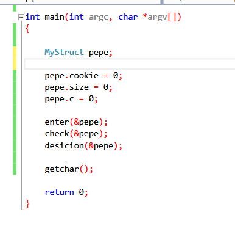
Vemos que en este ejemplo hay una estructura MyStruct pero en este caso en vez de estar declarada localmente en el stack está declarada como global lo cual es posible también y me da la posibilidad de manejarla mejor entre funciones sino será valida solo en el main en este caso, aunque no es la única posibilidad, ya veremos más adelante el heap y como se manejan estructuras y variables allí.
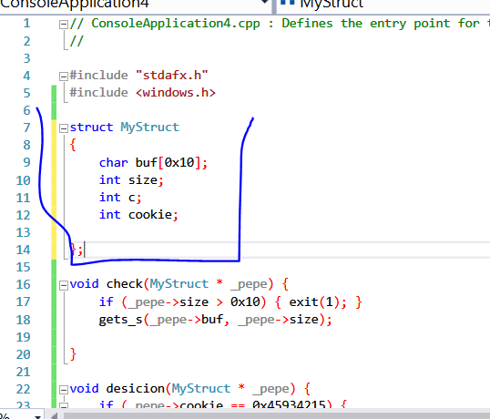
Vemos que la definición de la estructura está fuera del main y de cualquier función y eso la hace global, de cualquier manera la variable pepe que es del tipo MyStruct es local y está declarada en el stack.
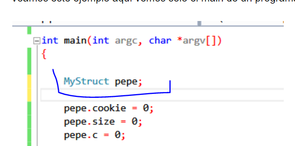
Entendemos la idea del programa de ir pasando un puntero a la estructura pepe y así poder leer o cambiar valores en la misma, dentro de las tres funciones enter, check y decisión.
Allí lo compile con símbolos, no me da mucha mas info, porque al ser la definición global no es fácil que ida detecte que la variable pepe es del tipo estructura.
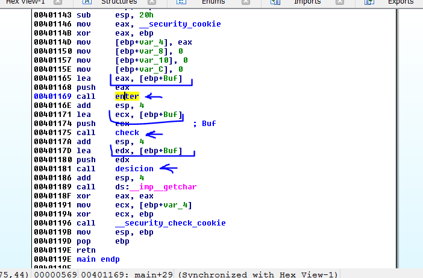
Vemos que en el main que hay un BUFFER
Veamos el largo de este buffer según IDA.
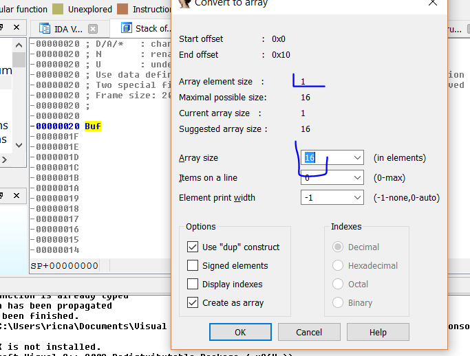
Vemos que el largo del buffer es 16 por 1 de cada elemento o sea que es 16 decimal, hasta acá si no conocemos el código, esto sería un buffer más y no tengo ni idea que es un campo de una estructura.
Acepto el largo.
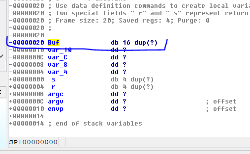
Vemos que las otras variables locales si apretamos X para ver donde se usan.
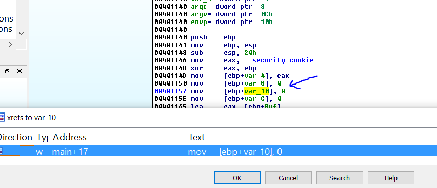
Vemos que todas se inicializan a cero y no se vuelven a usar, lo cual es sospechoso en una variable local, para que se crea y inicializa si no se usa, aquí se empiezan a encender algunas alarmas.
Y después está el CANARY
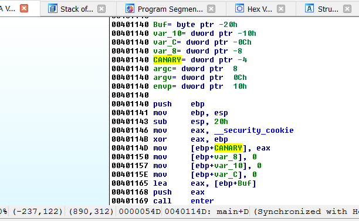
No hay ninguna variable más, no podemos renombrar las tres variables locales que se inicializan a cero porque como no se usan dentro de la función, no tiene sentido ponerles nombre, ni sé que nombre le pondría si no veo nada especial en el uso de ellas.
Vayamos a la primera función.
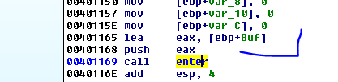
Vemos que halla la dirección del buffer y la pasa como argumento, lo cual es perfectamente posible, pudiéndose llenar el buffer dentro de una de estas funciones.
Entremos en check.
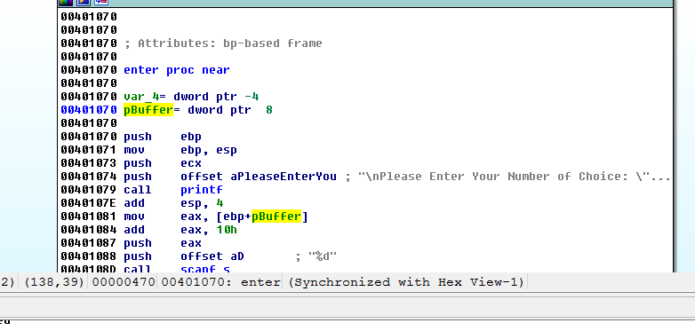
Lo renombro como pBuffer ya que es un puntero o dirección, porque uso LEA y no paso el valor sino la dirección donde está la variable Buffer.
Si hago Set Type o apreto Y para propagar.
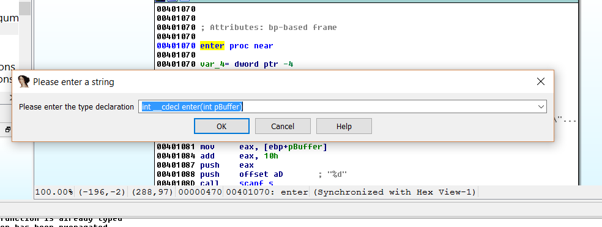
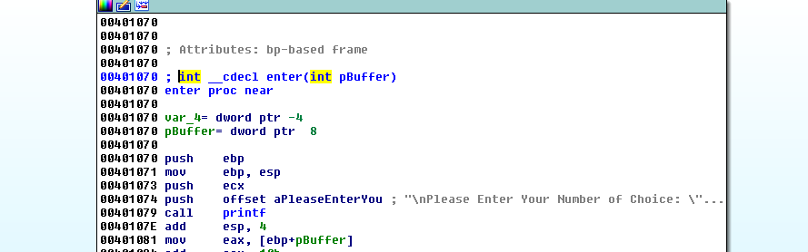
Veamos si en la referencia quedo bien.
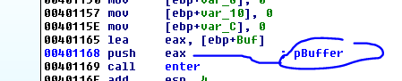
Vemos que esta correcto ya que EAX tiene la dirección de Buffer que se obtuvo con LEA.
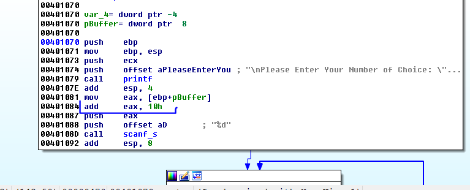
Aquí vuelve a saltar otra alarma si el buffer es de 16 de largo o sea 0x10, vemos que a la dirección de Buffer la suma 0x10 y no está escribiendo en el mismo sino a continuación, justo debajo.
Esto ya me da que pensar, si le pasas un puntero al buffer, luego estás escribiendo fuera, es el típico comportamiento de las estructuras, se pasa la dirección inicial a una función y luego se puede acceder a cualquier campo, en este caso algo que está debajo de un primer campo BUFFER.
Y que había justo debajo de BUFFER en el stack de main.
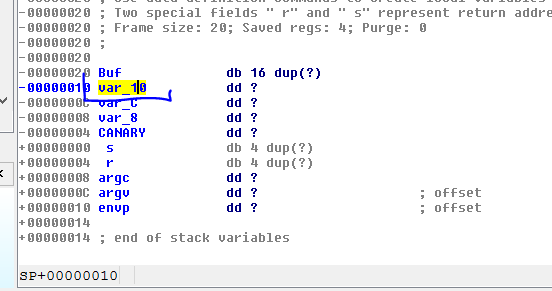
Vemos que está escribiendo en var_10 por lo tanto eso solo puede pasar si al menos Buffer cómo var_10 son campos de una estructura.
Muchos se preguntan porque tengo que mirar el stack del main en vez de la función check?
El tema es que al pasarle la dirección de Buffer, dicha dirección donde comienza el mismo y el mismo Buffer están en el main, y si sumo 0x10 a esa dirección llegare al var_10 del main, el cual como es una variable local no tendría sentido dentro de check, pero si tiene sentido si pertenece a una estructura.
Bueno por ahora vemos que
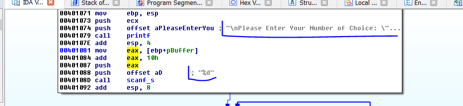
Me pide un número y lo guarda en el campo ese de la estructura que se llama var_10, usando scanf_s, así que renombrare var_10 a numero, pero antes como ya se que hay una estructura y los tres campos seguramente son accedidos en las funciones, la creare.
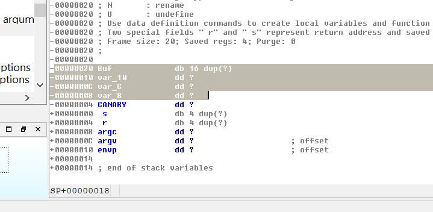
Voy de nuevo al main y marco hasta el CANARY y hago EDIT-CREATE STRUCTURE FROM SELECTION.
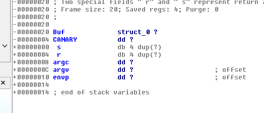
Allí creo la estructura pero lo llamo Buf, le cambiare el nombre a pepe.
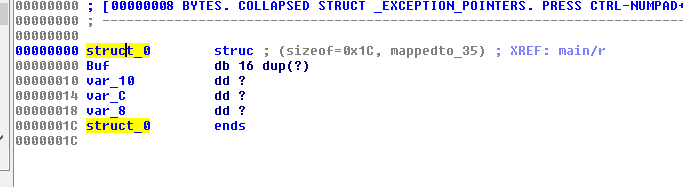
Y el nombre de la estructura le pondré MyStruct.
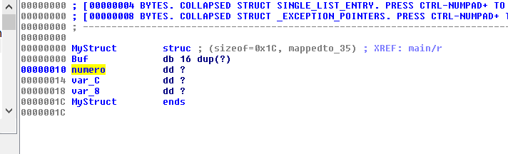
También renombro número.
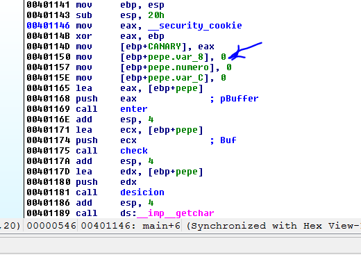
Y en el main donde está todo declarado, veo que está todo bien.
Volvamos a la función enter.
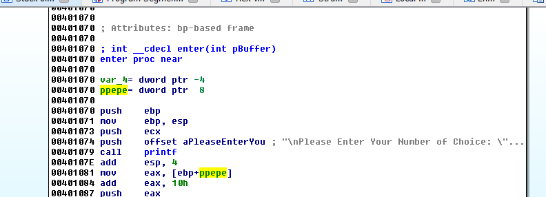
Cambio el nombre a ppepe por puntero a pepe y apreto Y borro la declaración, acepto y apreto Y de nuevo para la nueva declaración.
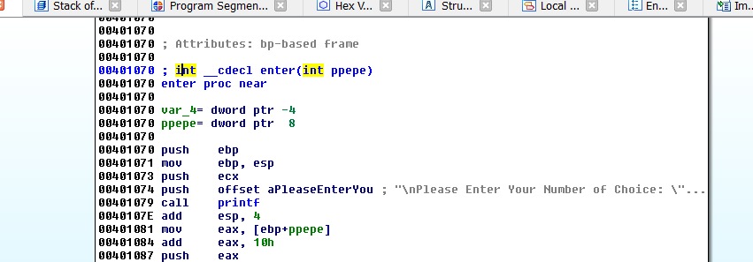
Sigamos reverseando.
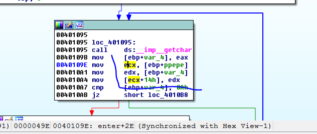
Aquí está usando un campo de la estructura ya que mueve a ECX la dirección inicial y luego le suma 0x14 para guardar en un campo de la misma aquí ya no necesitamos hacer cuentas, apreto T en esa instrucción.
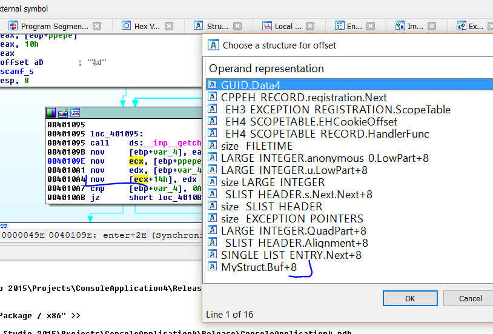
Elijo a qué estructura de las existentes corresponde y veo ahí en la lista que está MyStruct.
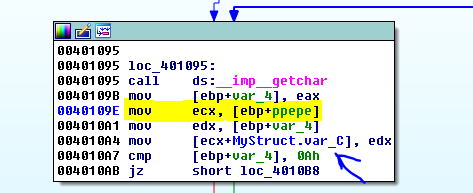
Vemos que solo detectando que es un campo de la estructura, apretando T y eligiendo la correcta ya IDA acomoda el nombre del campo de la misma, obviamente hay muchas estructuras y como no está definida aquí, IDA no puede saber a cuál estructura pertenece, pero se lo decimos y nos pone el campo correcto.
Vemos que es el loop que se coloca para filtrar los 0a después de un scanf, es un campo auxiliar en el código se llama c pero puede tener cualquier letra o nombre.
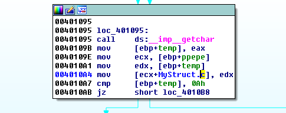
Cada vez que se pase el puntero a la estructura a un registro y luego se le suma un offset
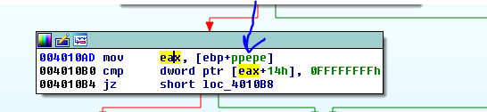
Estará accediendo a otro campo apreto T allí.
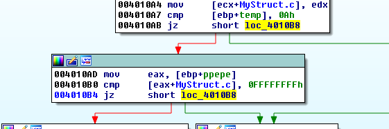
Es el final de ese chequeo sigo adelante.
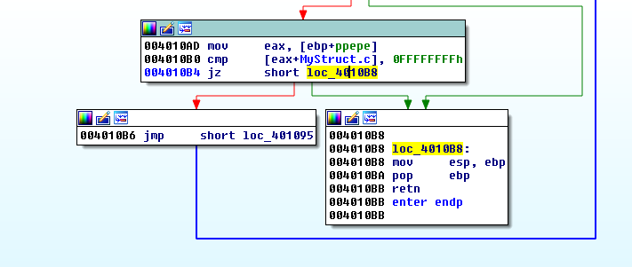
No hace más nada y no devuelve ningún valor de retorno en EAX.
Por lo tanto la primera función fue solo para leer el número que tipeamos y guardarlo en el campo número.
La siguiente función check.
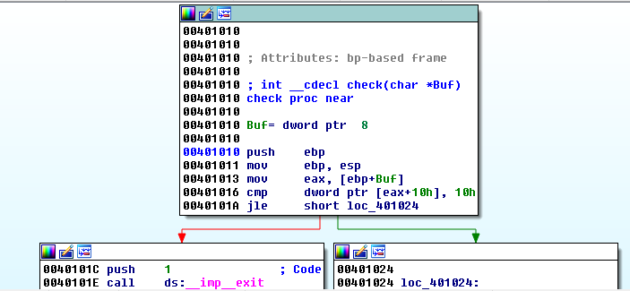
Hay que renombrar Buf a ppepe
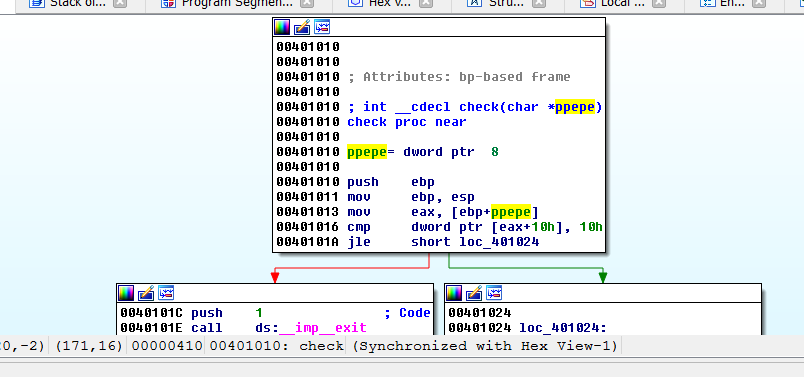
Apreto Y para Set Type.
Allí veo que compara un campo con 0x10, apreto T en esa instrucción.
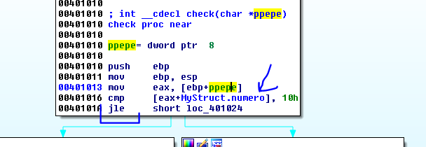
Compara el número que pusimos con 0x10 considerando el signo, esto es peligroso si se usa como size luego.
Vemos que al manejarnos como estructura, el campo lo lee en una función, lo chequea en otra función y luego lo usara posiblemente en una tercera y si vamos siguiendo el puntero a la estructura siempre podemos determinar qué campo es sin tener que debuggear, haciéndolo como variables sueltas se complica determinar que es el mismo valor siempre.
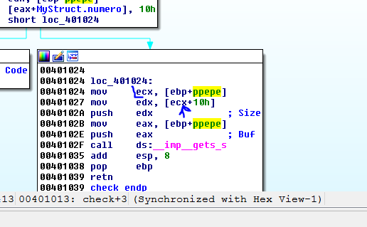
Allí hay otro campo apreto T.
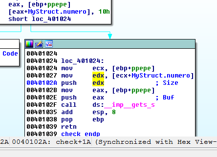
Veo que el campo número es usado como size de un gets_s pero ese número podría ser 0xffffffff pues el chequeo anterior era con signo y en ese caso 0xffffffff es -1 y es menor que 0x10 y lo pasa perfectamente.
Vemos que al gets_s se le pasa la dirección de ppepe, como el primer campo es el Buffer escribirá allí.
Ya vemos que habrá overflow.
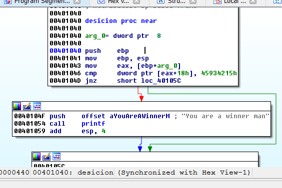
A la última función también se le pasa ppepe, renombramos y arreglamos todo.
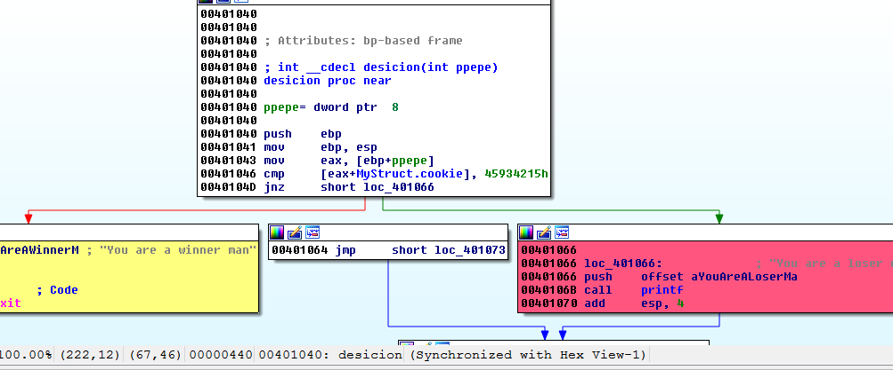
Allí lee a EAX la dirección de la estructura así que luego hay otro campo, cuando le suma un offset.
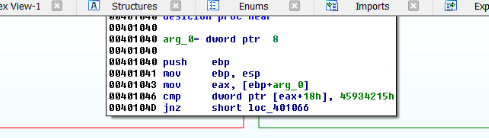
Esa var_8 es la variable que chequea nunca la uso ni usara más, le pongo cookie pero si no se el nombre cualquiera servirá.
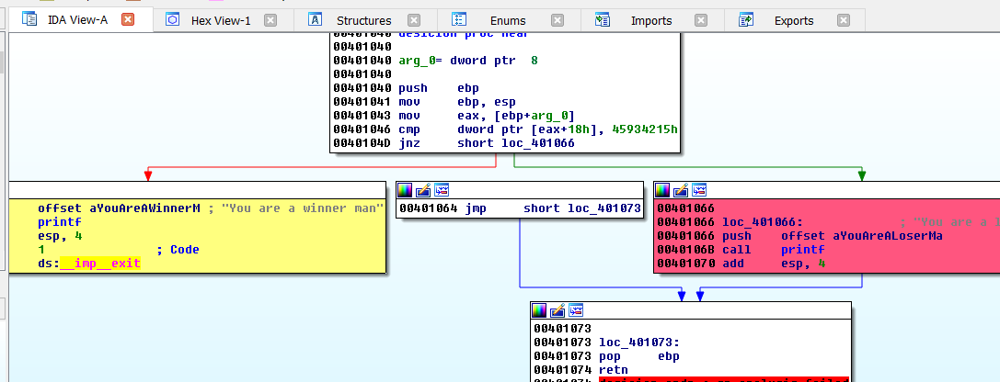
Vemos que aquí se toma la decisión si cookie es igual a 0x45934215 nos dirá que ganamos sino chau.
Así que ya sabemos que debemos pasar
Miremos la distribución del stack de main.
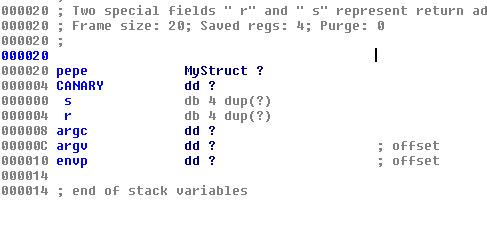
Obviamente todo está dentro de pepe, el buffer y la cookie, así que vayamos a estructuras a ver los sizes de cada uno.
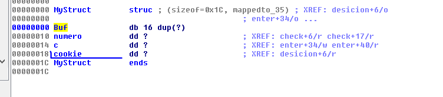
Tengo que llenar el buffer con 16 aes luego dos dwords más y luego esta cookie sería algo así.
fruta= “A” * 16 + numero + c + cookie
El script es similar a los anteriores
from subprocess import *
import struct
p = Popen([r'C:\Users\ricna\Documents\Visual Studio 2015\Projects\ConsoleApplication4\Release\ConsoleApplication4.exe', 'f'], stdout=PIPE, stdin=PIPE, stderr=STDOUT)
print "ATACHEA EL DEBUGGER Y APRETA ENTER\n"
raw_input()
primera="-1\n"
p.stdin.write(primera)
numero=struct.pack("<L",0x1c)
c=struct.pack("<L",0x90909090)
cookie=struct.pack("<L",0x45934215)
fruta= "A" * 16 + numero + c + cookie + "\n"
p.stdin.write(fruta)
testresult = p.communicate()[0]
print(testresult)
Vemos que le pasa -1 como numero para pasar el chequeo cuando compara con signo contra 0x10 y luego la fruta de 16 bytes para llenar el buffer, luego el numero al que le paso un valor correcto de 0x1c porque al overflodear sino lo cambiare, luego c que puede ser cualquier valor y luego la cookie 0x45934215.
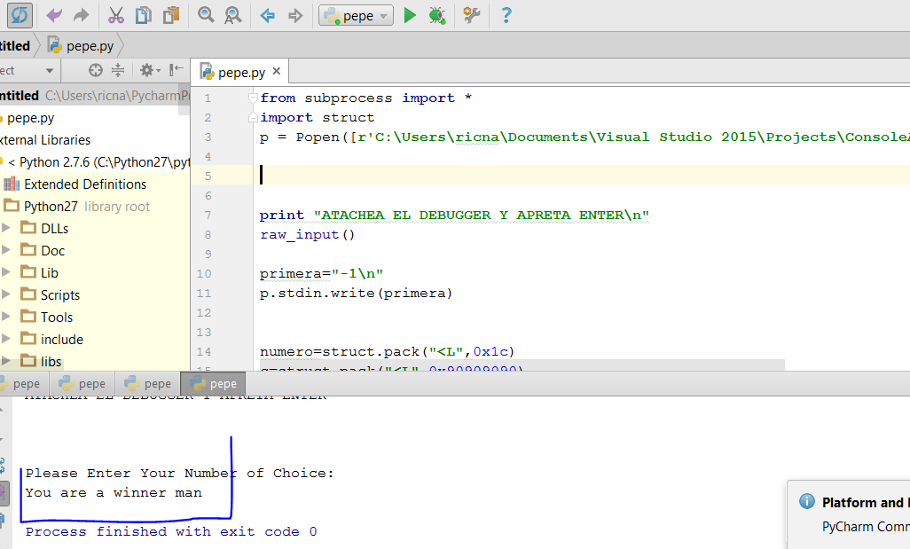
Bueno con esto terminamos la parte 26
Adjunto un ejercicio llamado IDA_STRUCT.7z vea si es vulnerable y que se puede hacer jeje.
hasta la parte 27